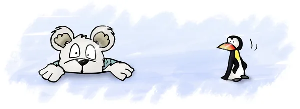
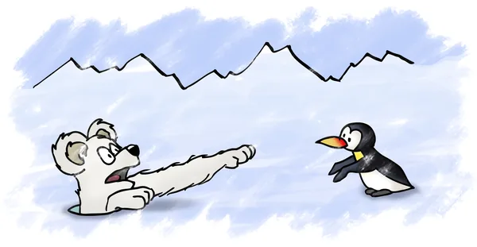
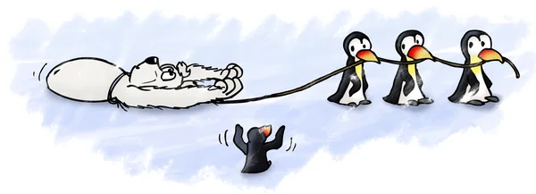
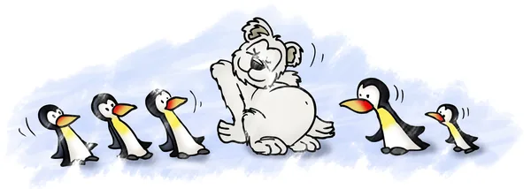
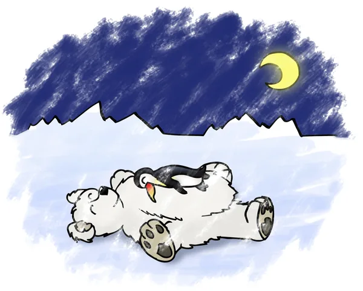

Der Eisbär und der Pinguin
Am Nordpol lebte einst der Eisbär Oscar. Aber alle nannten ihn Pummel. Auch seine Eltern hatten ihn so genannt, als er noch ein kleiner, pummeliger Bär war.
Jetzt war er schon groß, ein mächtiger Eisbär, der zwei Dinge am meisten liebte: fressen und schlafen. Wenn er satt war, legte er sich auf eine Eisscholle, blinzelte in die Sonne und träumte vor sich hin. Meist dachte er dann an einen leckeren Fisch, den er gern fangen würde, oder an andere Tiere, die ihm auch schmecken könnten – vielleicht ein Seehund oder ein Pinguin?
Dabei schnarchte er oft so laut, dass die Eisscholle zitterte und das Wasser Wellen schlug. Alle Tiere fürchteten ihn. Wenn er Hunger hatte, ging man ihm besser aus dem Weg.
Eines Tages wachte er nach einem schrecklichen Traum auf. Er hatte geträumt, dass er verhungern würde – und tatsächlich: Er war sehr, sehr hungrig! Er musste unbedingt etwas fressen.
Er schnappte nach einer Möwe, die sich unvorsichtigerweise in seiner Nähe niedergelassen hatte, doch die war schneller als er und flog davon. Auch den Polarfuchs und das Schneehuhn konnte er nicht fangen. Also beschloss er, unter das Eis zu tauchen und Fische zu jagen.
Gesagt, getan. Ganz in der Nähe fand Pummel ein Loch im Eis, durch das er sich gerade eben hindurchzwängen konnte, und tauchte hinab. Unter dem Eisloch hatten sich viele Fische versammelt, denn dort war es hell. Die Sonnenstrahlen fielen durch die Lücke im Eis ins Wasser und ließen alles leuchten. Für Pummel war es ein Festessen. Er fraß und fraß, und nur ab und zu streckte er den Kopf aus dem Eisloch, um Luft zu holen.
Schließlich war er satt. „Jetzt will ich wieder raus aus dem Wasser und mir eine schöne Stelle auf dem Eis suchen“, dachte er, „wo ich mich ausruhen und etwas Schönes träumen kann.“
Aber oh weh! Der Kopf und die Schultern passten zwar noch durch das Eisloch, doch sein Bauch war so dick geworden, dass er stecken blieb. So sehr er auch ruckelte und sich herauszuwinden versuchte: Er saß fest.
Verzweifelt hielt er Ausschau nach jemandem, der ihm helfen könnte. Der Polarfuchs sah zwar seine Not, rief aber schadenfroh: „Siehst Du, das hast Du von Deiner Fresssucht! Geschieht Dir ganz recht!“ Auch die Möwen – es waren wohl Lachmöwen – lachten und flogen dicht um ihn herum, aber nicht so dicht, dass er nach ihnen schnappen konnte.
Da wurde Pummel klar, dass er wohl verloren war. Er fing an zu winseln und zu heulen: „Uhhh-huhhh-uhhh …“, hallte es weit über das Eis.

Nicht weit von der Eisscholle, auf der der arme Pummel feststeckte, feierten die Pinguine das große Watschelfest. Das wurde nämlich immer gefeiert, wenn sich zwei Pinguine verliebt hatten. Diesmal waren es Pim und Trine.
Alle Pinguine bildeten eine lange Schlange und watschelten singend hintereinander her:
„Wir sind die Watschelpinguine,
feiern heute Pim und Trine,
watscheln hin und wieder her,
heißa-hopp, ist gar nicht schwer!“
„Halt, seid doch mal still, ich höre was!“, rief Pips, der kleinste von allen. „Uhhh-huuhhh-huhhh …“ Jetzt hatten es alle gehört.
„Es hört sich an, als weine jemand“, sagte Pips. „Wir müssen nachschauen, wer da so laut heult.“
Die Pinguine unterbrachen ihren Watscheltanz und watschelten in die Richtung, aus der das jämmerliche Heulen kam. Da sahen sie Pummel im Eis stecken.
„Vorsicht! Nicht zu dicht an ihn herangehen!“, rief einer.
„Bitte helft mir, ich tue Euch nichts“, heulte der Bär. „Huuh-huuuhh …“
Die Pinguine überlegten, ob sie es wagen sollten, dem unglücklichen Pummel zu helfen. Da machte Pips einen Vorschlag: „Ich gehe zu ihm hin und zupfe ihn am Ohr. Wenn er mir nichts tut, braucht Ihr keine Angst zu haben.“
So geschah es. Pips watschelte mutig los, aber als er den großen Bären ganz nah vor sich sah, bekam er doch ein bisschen Angst. Ganz vorsichtig zupfte er den Bären mit dem Schnabel am linken Ohr.
„Hihihi, das kitzelt“, kicherte Pummel und sah Pips freundlich an.
Da fiel Pips ein Stein vom Herzen, und er rief den anderen zu: „Ihr könnt ruhig kommen, der Bär tut Euch nichts!“
Nun kamen auch die anderen Pinguine angewatschelt und standen schließlich im Kreis um den Bären im Eisloch. Sie überlegten, wie sie Pummel helfen könnten.

Es war wieder Pips, der die rettende Idee hatte: „Wir holen uns einen dicken Strick aus dem alten Schiffswrack im Eismeer. Damit können wir ihn herausziehen!“
So geschah es. Die Pinguine legten eine Schlinge um den Bären und zogen das Seil unter seinen Armen fest zu. Dann packten sie es in einer langen Reihe mit dem Schnabel und zogen auf Pips’ Kommando mit aller Kraft: „Hau ruck … hau ruck … hau RUCK!“

Mit einem lauten PLOPP flutschte Pummel aus dem Eisloch, und alle Pinguine purzelten durcheinander. Pummel rieb sich den Bauch und konnte es gar nicht fassen, dass er wieder frei war.
„Komm mit und feiere mit uns das Watschelfest!“, rief Pips.
So geschah es. Der große Bär stellte sich auf die Hinterbeine und versuchte zu watscheln wie die Pinguine. Das sah sehr lustig aus.
Als sie spät am Abend alle beieinandersaßen, sagte Pummel: „Liebe Pinguine, Ihr habt mir das Leben gerettet. Ich werde bei Euch bleiben und Euch fortan beschützen. Kein Eisbär und keine Robbe wird Euch etwas zuleide tun, solange ich da bin.“
Da freuten sich die Pinguine sehr, dass sie nun einen so großen und starken Beschützer hatten. Sie fassten sich an den Flügeln und sangen:
„Wir sind die Watschelpinguine,
feiern heute Pim und Trine,
Eisbär Pummel feiert mit,
bleibt bei uns auf Schritt und Tritt.“

Schließlich waren sie alle müde nach diesem aufregenden Tag und legten sich hin, Pummel in ihrer Mitte. Pips durfte auf Pummels weichem Bauch schlafen.
Der Mond schaute zu und sah, wie der große Bär seine gewaltige Tatze auf den kleinen Pinguin legte, ihn vorsichtig zu sich heranzog und ihm brummend ins Ohr flüsterte: „Danke, Pips. Du bist der mutigste Pinguin auf der Welt, und ich freue mich, dass ich Dein Freund sein darf.“
Dann schlief er ein, und beim Atmen hob und senkte sich sein Bauch. Pips lag noch lange wach und dachte an alles, was er an diesem Tag erlebt hatte. Schließlich fielen auch ihm die Augen zu, und er ließ sich auf dem Bauch des Bären in den Schlaf wiegen.

Ende